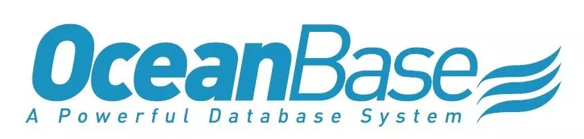
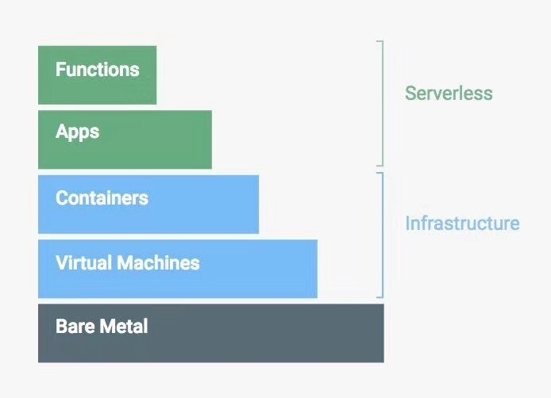
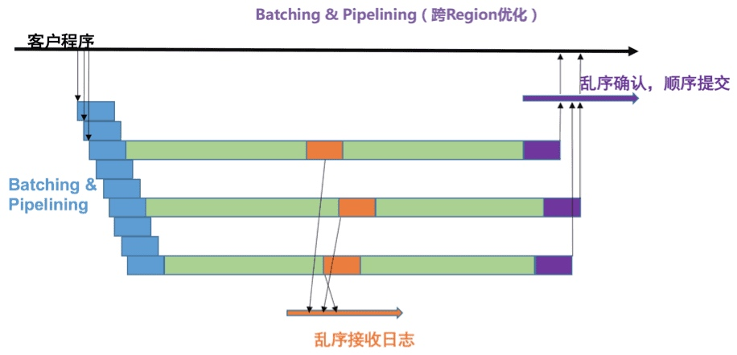

经过几年的研发，如今市面上已经有不少自研数据库。十分好奇这些数据库产品的特点和区别，于是选取了几个知名度较高的数据库产品进行调研。因为对它们的了解还不够，所以没有深入到技术层面进行介绍。
OceanBase

完全自主研发的金融级分布式关系数据库。
设计初衷
阿里内部已经实现了去IOE，但是已有的这一套方案不能直接推广到其他企业。原因在于阿里目前的体现主要依赖于开源的MySQL，许多功能需要在业务层面和数据库层面一同努力才能实现。**本质上这套系统是服务于阿里巴巴的专用系统，而不是一个通用的系统。**其他企业如果想模仿，同样需要在两个层面上共同发力，这样的难度是很大的。
所以，从一开始OceanBase的目标就是——我们不想只做一个专用的系统，要做就一定要做一个通用的系统。我们希望今后 OceanBase 能够服务于各行各业，再也不需要企业投入几十几百甚至几千个人去改造、去重新做一套业务系统。
基于自研内核
与其他大多数数据库产品不同，OceanBase基于自研内核。从2009年开始研发，初期支撑淘宝的收藏夹功能，到2014年扛住双十一10%的流量，再到现在支付宝所有核心业务都基于OceanBase，团队经历了许多考验，OceanBase也日趋完善。
金融级高可用
传统数据库本质上是借助硬件的可靠性，也就是硬件需要达到五个九的可靠性来实现高可用的。就算出了故障，它的数据也能救得回来。但是这种手段需要非常高的成本，同时没有足够的扩展能力。
为了实现高可用性，OceanBase引入了Paxos协议，每一笔事务，主库执行完成后，要同步到半数以上库(包括主库自身)，例如3个库中的2个库，或者5个库中的3个库，事务才成功。这样，少数库的异常不会对业务造成太大影响。通过这套处理，OceanBase成为第一个支持分布式事务的商业数据库。
OceanBase 通过“三地五中心”部署实现城市级故障自动无损容灾。任何一个城市出故障，比方说杭州断网了，那么剩下的依然超过半数，这个系统还是可以恢复工作的。
成本低
OceanBase使用了分布式技术和无共享架构，来自业务的访问会自动分散到多台数据库主机上。在相关技术的支持下，OceanBase还能够采用廉价的PC服务器作为其数据库主机。通过这两个方面的变革，运维人员可以愉快地通过增加服务器数量来增加系统的容量和性能。（PC服务器的价格也比小型机、大型机低很多）
PolarDB
自主研发的下一代关系型分布式云原生数据库。
下一代
PolarDB采用第三代分布式共享存储架构，实现了计算节点(主要做 SQL 解析以及存储引擎计算的服务器)与存储节点(主要做数据块存储，数据库快照的服务器)的分离，提供了即时生效的可扩展能力和运维能力。同时，POLARDB使用高达50Gbps的RDMA网络来连接其分布式计算节点集群，提升网络性能。
云原生
云原生数据库应该是一个较新的概念，在PolarDB的定义下，云原生数据库应该有以下特性：
-
一个云原生数据库不仅是一个TP数据库，也是一个AP数据库，TP和AP融合在一起，称之为HTAP
- 在HTAP中TP和AP共享一份存储，对于分析来说不存在任何数据延迟，由于不需要数据同步，不必把数据从主节点同步到一个只读节点，这时数据是实时的，对于时延要求比较苛刻的应用来说非常有益
-
云原生数据库必须是serverless的，有了serverless，可以大幅削减成本
- serverless可以轻松做到按需使用，按存储付费，计算成本也很低，并且你可以为不同的业务模型指定不同的存储策略，对于忙的业务，可以使用更多的内存和SSD，对于闲置的业务，可以把数据放到HDD盘上，这样可以大幅缩减成本。

- serverless可以轻松做到按需使用，按存储付费，计算成本也很低，并且你可以为不同的业务模型指定不同的存储策略，对于忙的业务，可以使用更多的内存和SSD，对于闲置的业务，可以把数据放到HDD盘上，这样可以大幅缩减成本。
-
云原生数据库必须是智能的，就像一个顾问，可以承担很多诊断和管理工作，通过这些工作我们可以提升用户体验并让用户不必再关心这些枯燥棘手的事情
- 智能顾问会通过数据分析提出SQL或索引优化建议，也可以为链路问题诊断提供帮助
TiDB
开源分布式 HTAP (Hybrid Transactional and Analytical Processing) 数据库。
金融级高可用
基于 Raft 的多数派选举协议可以提供金融级的 100% 数据强一致性保证，且在不丢失大多数副本的前提下，可以实现故障的自动恢复 (auto-failover)，无需人工介入。
一站式 HTAP 解决方案
TiDB 作为典型的 OLTP 行存数据库，同时兼具强大的 OLAP 性能，配合 TiSpark，可提供一站式 HTAP 解决方案，一份存储同时处理 OLTP & OLAP，无需传统繁琐的 ETL 过程。
云原生 SQL 数据库
TiDB 是为云而设计的数据库，支持公有云、私有云和混合云，使部署、配置和维护变得十分简单。
X-DB
自主研发的全球级分布式强一致的关系型数据库系统。
全球级分布式强一致性
阿里独立设计研发了真正工业级的Paxos独立库——X-Paxos，为分布式高性能数据库X-DB奠定了坚实的基础。
跨Region/跨国场景下对X-Paxos来说最大的挑战就是如何在高延迟网络下保持高吞吐和相对低延迟，X-Paxos针对高延迟网络做了大量的协议优化尝试和测试，并结合学术界现有的理论成果通过合理的Batching和Pipelining，设计并实现了一整套自适应的针对高延迟高吞吐和低延迟高吞吐网络的通信模式，极大的提升了X-Paxos的性能。类似的优化大部分还在理论阶段，在同类竞品中还非常的罕见。
